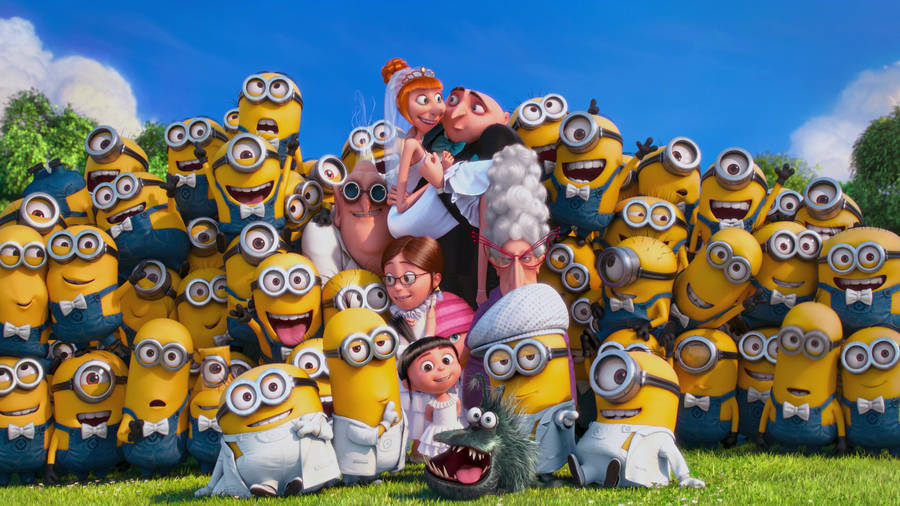

Work History
- Supervillain: Gru was a notorious supervillain who wanted to be the world's greatest villain. He stole things, including Queen Elizabeth II's crown and the Zodiac Stone.
- Jelly manufacturer: Gru also worked as an artisanal jelly manufacturer.
- AVL agent: Gru is now a secret agent for the AVL, an organization that fights evil.
Skills
- Leadership: Gru is a natural leader with charisma and high-level intelligence.
- Weapon proficiency: Gru is skilled with weapons like the Freeze Ray, Shrink Ray, and Fart Gun.
- Minions: Gru leads an army of Minions.
Family
-
Parents:
- Marlena
- Robert Gru also know as Bald Terror
-
Siblings:
- Gru has a twin brother named Dru. or Druuuuuuuuuuuuu😂
-
Adoptive daughters:
- Margo
- Edith
- Agnes
-
Wife